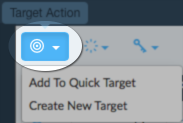
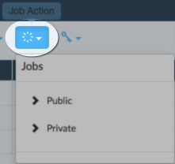
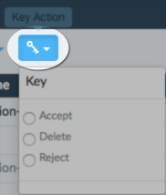

All minions connected to any master are displayed in the minion view along with status and configuration.
Click a column header to sort. For example, you might sort by key status to find minions that have unaccepted keys.
Filters let you find specific minions to manage.
|
Text Filter |
Text filters can be applied to find minions by the following:
|
|
Grains Filter |
Grains filters examine the grains that are present on the currently selected minions so you can quickly select a grain from a list. If you do not see the grains you are expecting, double-check that the selected minions have that grain. You can filter using the intersection of up to 3 grains. |
If you are having trouble selecting exactly what you want using text or grains filters, you can apply a filter, add the results to the quick target, apply another filter, add the results to the quick target, and so on. After all minions are selected, view and save the quick target to make a reusable target.
Click the radio select button to select the minon you want to manage.
|
Targets |
 | Targets let you create groups of minions for job distribution and reporting. |
|
Jobs |
 | You can quickly schedule a saved job to run on the selected minions. |
|
Keys |
 |
Key status is displayed in the Status column. Jobs are not sent to any minions that do not have an accepted key.
|